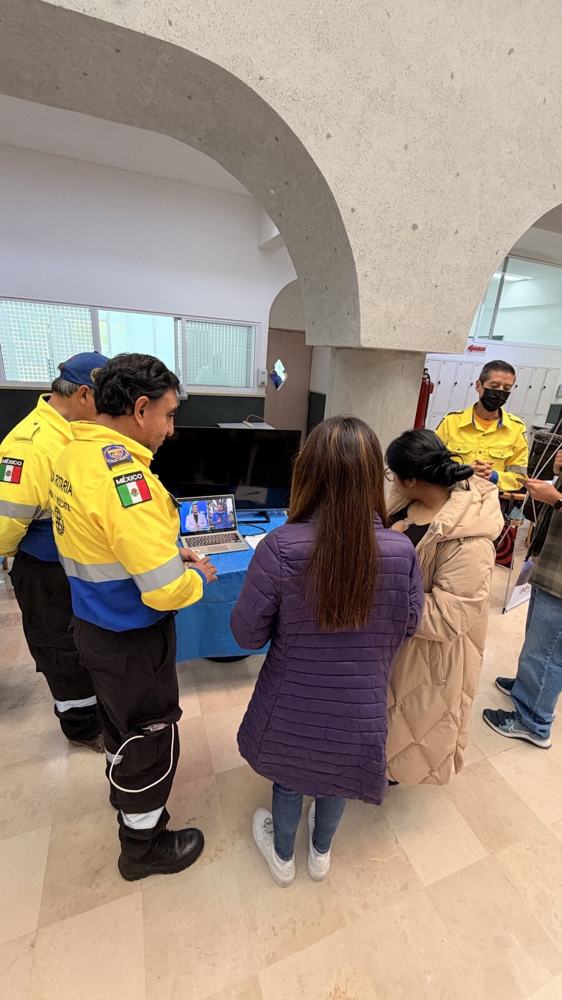
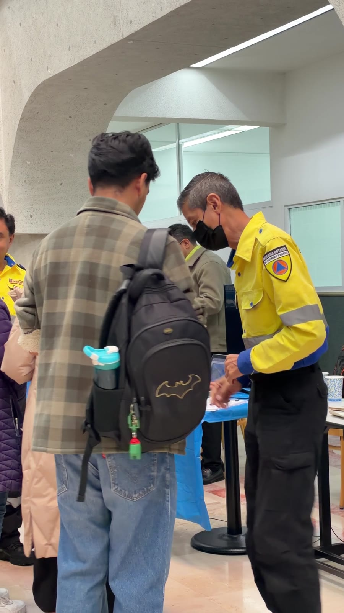
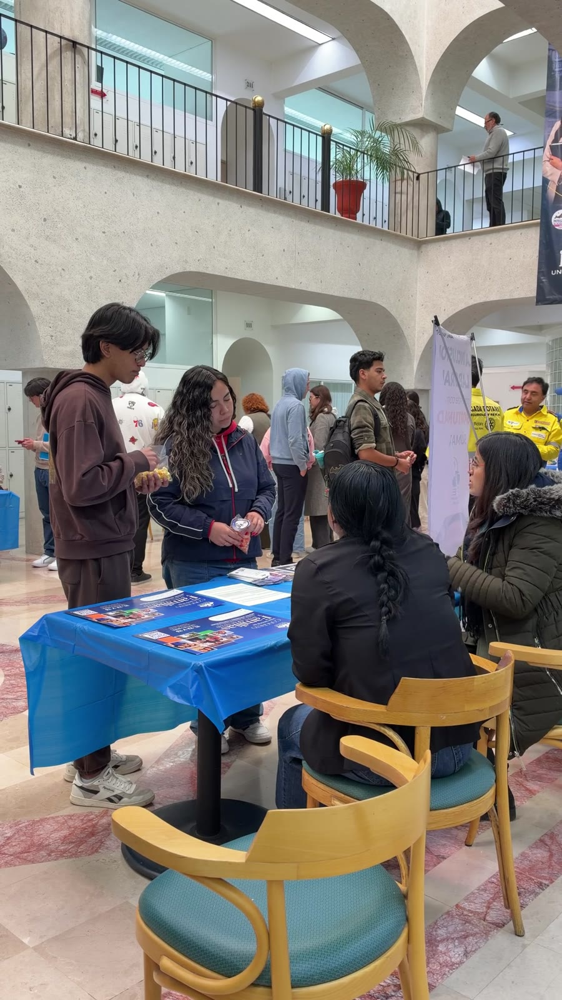
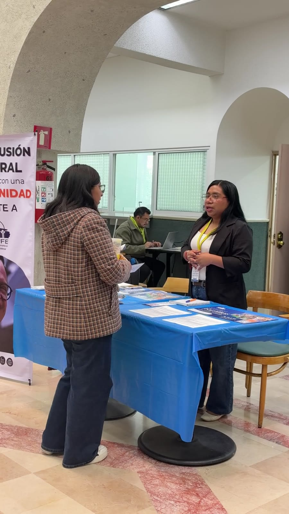
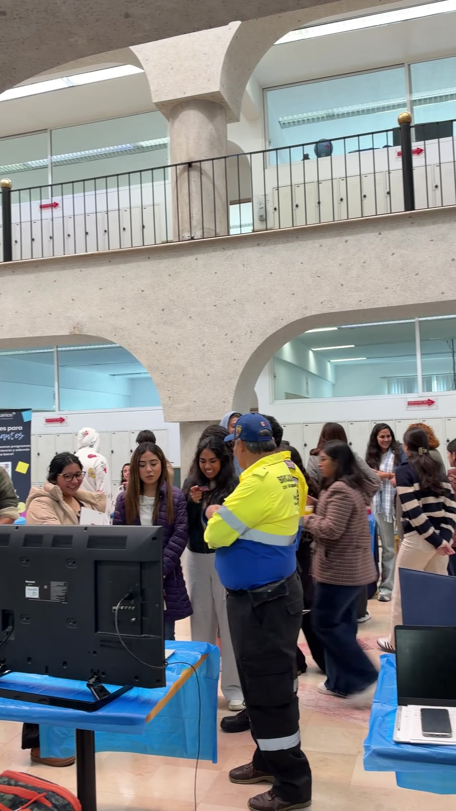
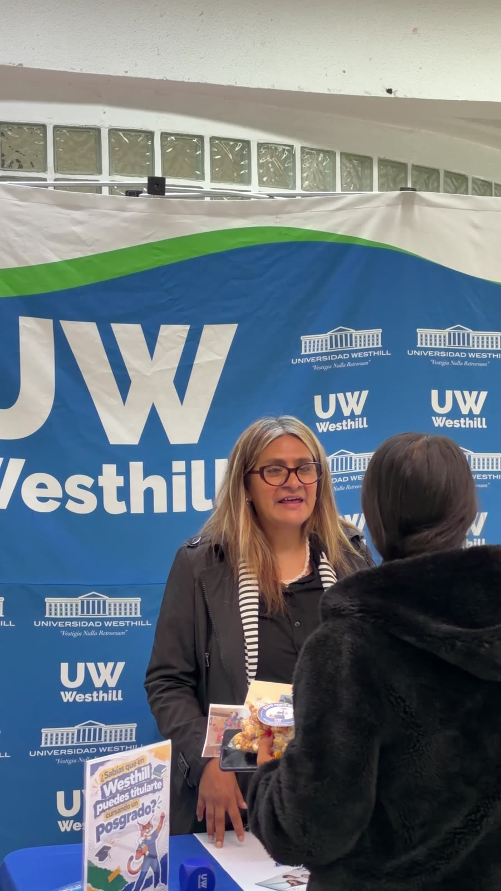

RECAPRECAPRECAPRECAPRECAP
Feria de Empleo
Así se vivió laFeria de Empleo
Conocimos sulabor de cerca
Vacantes y becaspara estudiantes
La inclusión laboralpresente
Alumnos conectandocon empresas
Y no faltaronlas palomitas
Titúlate conun posgrado
Gracias a todoslos que vinieron
Brigada RotariaSeguridad y rescate
ProbecariosVacantes con beca
CONFEInclusión laboral
Stand WesthillPosgrados y titulación
Gracias por ser parte de la
Feria de Empleo
Talento que construye comunidad
Nos vemos en la próxima edición.
Nueva vacante para tiFeria de Empleo Westhill
ahora
Programa con becaNo necesitas experiencia
ahora
Prácticas y servicio socialPostúlate en el stand
ahoraLo que encontraron
Vacantes
Prácticas
Servicio social
Becas